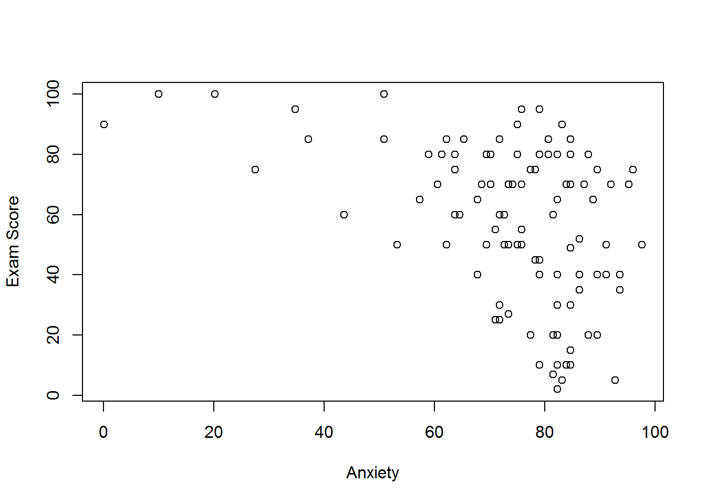
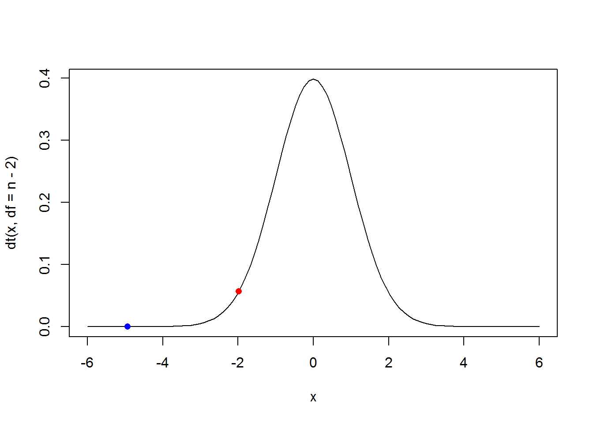

5 Correlation
5.1 Pearson’s correlation
\[r=\frac{\sum_{n}^{i=1}(x_i-\bar{x})(y_i-\bar{y})}{(n-1)s_{x}s_{y}}\]
5.1.1 Problem
- Anxiety and exam performance
- Participants:
- 103 students
- Measures
- Exam performance (%)
- Exam Anxiety (the EAQ, score out of 100)
- Time spent revising (hours)
5.1.2 Solution
url <- "http://spatial.binghamton.edu/geog533/data/ExamAnxiety.csv"
examData <- read.csv(url,header = TRUE)
library(knitr)
## display first 10 rows
kable(head(examData,n = 10))| Exam | Anxiety | Revise |
|---|---|---|
| 40 | 86.298 | 4 |
| 65 | 88.716 | 11 |
| 80 | 70.178 | 27 |
| 80 | 61.312 | 53 |
| 40 | 89.522 | 4 |
| 70 | 60.506 | 22 |
| 20 | 81.462 | 16 |
| 55 | 75.820 | 21 |
| 50 | 69.372 | 25 |
| 40 | 82.268 | 18 |
plot(examData$Anxiety,examData$Exam,xlab = "Anxiety",ylab = "Exam Score")
#abline(lm(examData$Exam~examData$Anxiety))
cor(examData,use = "complete.obs",method = "pearson")## Exam Anxiety Revise
## Exam 1.0000000 -0.4409934 0.3967207
## Anxiety -0.4409934 1.0000000 -0.7092493
## Revise 0.3967207 -0.7092493 1.0000000cor.test(examData$Exam,examData$Anxiety,method = "pearson")##
## Pearson's product-moment correlation
##
## data: examData$Exam and examData$Anxiety
## t = -4.938, df = 101, p-value = 3.128e-06
## alternative hypothesis: true correlation is not equal to 0
## 95 percent confidence interval:
## -0.5846244 -0.2705591
## sample estimates:
## cor
## -0.4409934alternative indicates the alternative hypothesis and must be one of “two.sided”, “greater” or “less”. You can specify just the initial letter. “greater” corresponds to positive association, “less” to negative association.
cor.test(examData$Exam, examData$Anxiety, alternative = "less", method = "pearson")##
## Pearson's product-moment correlation
##
## data: examData$Exam and examData$Anxiety
## t = -4.938, df = 101, p-value = 1.564e-06
## alternative hypothesis: true correlation is less than 0
## 95 percent confidence interval:
## -1.0000000 -0.2995071
## sample estimates:
## cor
## -0.44099345.2 Significance test
To test the null hypothesis that the true correlation coefficient, \(\rho\), is equal to zero, the data for each variable are assumed to come from normal distributions.
\[t=\frac{r\sqrt{n-2}}{\sqrt{1-r^2}} \]
If the null hypothesis is true, this statistic has a t-distribution, with n – 2 degrees of freedom.
result <- cor.test(examData$Exam, examData$Anxiety, alternative = "less", method = "pearson")
str(result)## List of 9
## $ statistic : Named num -4.94
## ..- attr(*, "names")= chr "t"
## $ parameter : Named int 101
## ..- attr(*, "names")= chr "df"
## $ p.value : num 1.56e-06
## $ estimate : Named num -0.441
## ..- attr(*, "names")= chr "cor"
## $ null.value : Named num 0
## ..- attr(*, "names")= chr "correlation"
## $ alternative: chr "less"
## $ method : chr "Pearson's product-moment correlation"
## $ data.name : chr "examData$Exam and examData$Anxiety"
## $ conf.int : atomic [1:2] -1 -0.3
## ..- attr(*, "conf.level")= num 0.95
## - attr(*, "class")= chr "htest"r <- result$estimate
n <- nrow(examData)
t <- r*sqrt(n-2)/sqrt(1-r^2)
t## cor
## -4.938025pt(t,df = n-2)## cor
## 1.563936e-06curve(dt(x,df = n-2),from = -6,to = 6)
t.critical <- qt(0.025,df = n-2)
t.critical## [1] -1.983731points(t.critical,dt(t.critical,df = n-2),pch=16,col="red")
points(t,dt(t,df = n-2),pch=16,col="blue")
5.3 Correlation and sample size
An extremely important point is that the correlation coefficient is influenced by sample size. It is far easier to reject the null hypothesis that \(\rho=0\) with a large sample size than it is with a small sample size.
For large sample size, critial t value is approximately \(2/\sqrt{n}\)
n <- c(10,15,20,30,50,100,250,500,1000)
r <- round(2/sqrt(n),3)
df <- data.frame(n,r)
names(df) <- c("Sample size", "Minimum absolute value of r needed to attain significance")
library(knitr)
kable(df)| Sample size | Minimum absolute value of r needed to attain significance |
|---|---|
| 10 | 0.632 |
| 15 | 0.516 |
| 20 | 0.447 |
| 30 | 0.365 |
| 50 | 0.283 |
| 100 | 0.200 |
| 250 | 0.126 |
| 500 | 0.089 |
| 1000 | 0.063 |
5.4 Spearman’s correlation
- Spearman’s rho
- Pearson’s correlation on the ranked data
\[r_{S} = 1 - \frac{6\sum_{i=1}^{n}d_{i}^{2}}{n^3-n}\]
5.4.1 Problem
World’s Biggest Liar competition
- 68 contestants
- Measures
- Where they were placed in the competition (first, second, third, etc.)
- Creativity questionnaire (maximum score 60)
5.4.2 Solution
url <- "http://spatial.binghamton.edu/geog533/data/TheBiggestLiar.csv"
liarData <- read.csv(url,header = TRUE)
library(knitr)
## display first ten rows
kable(head(liarData,n = 10))| Creativity | Position | Novice |
|---|---|---|
| 53 | 1 | 0 |
| 36 | 3 | 1 |
| 31 | 4 | 0 |
| 43 | 2 | 0 |
| 30 | 4 | 1 |
| 41 | 1 | 0 |
| 32 | 4 | 0 |
| 54 | 1 | 1 |
| 47 | 2 | 1 |
| 50 | 2 | 0 |
plot(liarData$Creativity,liarData$Position)
cor(liarData$Position, liarData$Creativity, method = "spearman")## [1] -0.3732184cor.test(liarData$Position, liarData$Creativity, alternative = "less", method = "spearman")## Warning in cor.test.default(liarData$Position, liarData$Creativity,
## alternative = "less", : Cannot compute exact p-value with ties##
## Spearman's rank correlation rho
##
## data: liarData$Position and liarData$Creativity
## S = 71948, p-value = 0.0008602
## alternative hypothesis: true rho is less than 0
## sample estimates:
## rho
## -0.3732184